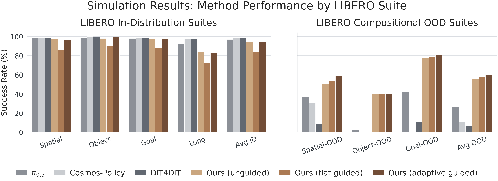
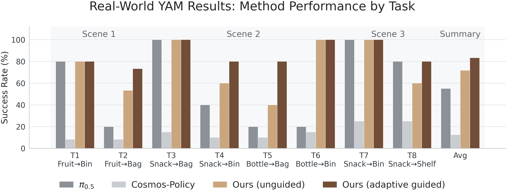

Code
CodeGenerative video foundation models exhibit strong compositional priors, yet world-action models (WAMs) and video-action models (VAMs) often lose these priors after finetuning on robotic action data. We refer to this discrepancy as the video-action generalization (VAG) gap. We systematically investigate this gap by evaluating a broad VAM design space, then introduce the Temporal Ratio (TR), an attention-based diagnostic that measures how strongly the action head relies on future latent rollouts relative to the anchored current frame. TR predicts compositional generalization capacity and varies naturally with task phase: it rises during planning and falls during precise manipulation. Based on these findings, we propose TR-Adaptive Guidance, an inference-time method that amplifies compositional video conditioning when the policy relies on future rollouts. On LIBERO and real-world bimanual tasks, this improves compositional OOD performance while preserving ID precision.
Understanding and Mitigating the
Video-Action Generalization Gap via Temporal Ratio
We study VAMs that feed partially denoised latent video features into a flow-matching action head. The video backbone (here Cosmos-Predict 2.5-2B) is pretrained on large-scale video data, finetuned on the target robot domain, and shows strong compositional priors. However, VAMs often fail to inherit these priors after training with action data, leading to a VAG gap. This project is about:
- Understanding how the action head interacts with the video head.
- Explaining why the VAG gap appears, and when certain compositional generalization priors are inherited/blocked by the VAMs.

When the video model is rolled out autoregressively, it can imagine novel object-goal combinations that were never seen in the training data. This proves that we have the necessary prerequisites to solve the VAG gap. These are 10 fps autoregressive self-forcing predictions rolled out up to 10 times, generating a 1.7-second chunk at each step. Enjoy the unexpected hallucinations and the occasional frame jumps!
No clips.
To understand the interaction between the video-action heads and analyze the VAG gap, we evaluate a broad VAM design space across three axes:
- Adaptation strategy — how the pretrained video backbone is finetuned on robot data, from lightweight LoRA to full finetuning. LoRA tends to preserve more of the pretrained structure, while full finetuning more readily modifies it.
- Video feature noise level (σ) — the denoising noise level at which the partially denoised latent video features are extracted and passed as conditions to the action head. We realized that future video features at high noise level have low SNR while those at low noise levels exhibit some degree of transition hallucination. An intermediate noise level exposes the intent of the plan while maintaining higher SNR.
- Temporal horizon — how far into the future the video model rolls out before conditioning the action. Longer rollouts improve object-goal generalization but also incorporate hallucinations like frame jumping leading to lower success rates.

Absolute success rates and the VAG gap (ID vs OOD) across backbone adaptation, video noise level, and prediction horizon reveal no clear pattern. To explain this, we started looking into the rollouts and realized that:
- The action head ignores misleading video predictions for ID tasks, resulting in a successful task execution.
- The action head also ignores correct compositional video predictions for OOD tasks, resulting in a failed task execution.
To find an explanation, we started looking into the video denoising process and realized that the current frame latent is in-painted at every denoising step while the future latent frames are denoised gradually. This creates a stark difference in the SNR of the current frame and future frames at every video noise level.


We introduce the Temporal Ratio (TR), an attention-based diagnostic that measures how strongly the action head relies on future latent rollouts relative to the anchored current frame.
TR has two interesting properties:
- TR turns the apparent design-space noise into an interpretable future-reliance signal.
- TR varies naturally with task phase: it rises during planning and falls during precise manipulation.
At each replan step, the action tokens attend over current-frame video tokens and predicted future video tokens. TR is the ratio of action attention assigned to future frames over the attention assigned to the current frame. We use it both as a diagnostic and as a runtime signal for adaptive guidance.

We evaluate on object-goal compositional OOD variants of LIBERO — spatial, goal, and object generalization. We show the executed rollout (top) with the policy's predicted video (bottom) in the rollout videos below. A few tasks the final policy does not solve are marked ✗.
We report success rates across in-distribution and compositional out-of-distribution suites of LIBERO. The grouped bar chart below compares TR-Adaptive Guidance against baselines, showing that it improves OOD performance while preserving ID precision.

The real-world YAM evaluation tests object-goal binding under multiple target and receptacle candidates. The same TR signal used in simulation is used to amplify planning-time video conditioning on the robot.
Our real-world policies are trained on a 22-task bimanual manipulation set drawn from a large-scale, open-source behavior-cloning dataset collected on two-arm YAM stations. Each clip stitches the synchronized wrist and scene camera views side by side.
No tasks match your filter.
The grouped bar chart below compares TR-Adaptive Guidance against baselines on the real-world YAM tasks, reporting success rates across in-distribution and compositional out-of-distribution settings.

@misc{anonymous2026temporalratio,
title={Understanding and Mitigating the Video-Action Generalization Gap via Temporal Ratio},
author={Anonymous},
year={2026},
note={Under review}
}